6. Bifurcaciones
Semanas 2 y 7
¿Qué cambia en el retrato de fase cuando cambia un parámetro? Casi siempre, nada importante: los equilibrios se corren un poco y conservan su tipo. Esta parte trata de las excepciones. Una bifurcación local es una pérdida de hiperbolicidad, y en el plano solo hay dos maneras de perderla: un valor propio real pasa por cero (silla-nodo, transcrítica, horquilla) o un par complejo cruza el eje imaginario (Hopf). La parte termina con las bifurcaciones de los propios ciclos y con la herramienta para estudiarlas: el mapa de Poincaré.
Al terminar esta parte usted podrá
- Explicar qué es una bifurcación local como pérdida de hiperbolicidad, y reconocer en el plano traza–determinante las dos maneras en que puede ocurrir en \(\mathbb R^2\).
- Analizar las bifurcaciones silla-nodo, transcrítica y de horquilla (supercrítica y subcrítica) con líneas de fase y diagramas de bifurcación, y decidir cuáles sobreviven a una perturbación del modelo.
- Seguir una receta de cinco pasos (equilibrios, jacobiano, cruce, transversalidad y no degeneración) para encontrar y clasificar bifurcaciones en sistemas planos, reduciendo a la variedad central cuando haga falta.
- Enunciar el teorema de Hopf con todas sus hipótesis, distinguir la supercrítica de la subcrítica con el primer coeficiente de Lyapunov o con una simulación, y explicar la histéresis que produce una subcrítica.
- Construir el mapa de Poincaré de una órbita periódica, calcular su multiplicador (analíticamente o con la divergencia) y decidir con él la estabilidad del ciclo.
Ruta de las clases
| Semana | Qué se ve | Capítulo | Scripts |
|---|---|---|---|
| 2 (10 de agosto) | Pérdida de hiperbolicidad; silla-nodo y su fantasma; transcrítica y el láser; horquillas, histéresis y bifurcaciones imperfectas | §6.1–6.4 | C6_Ej1–C6_Ej5 |
| 6 (9 de septiembre) | Introducción a los mapas de Poincaré | §6.8 | C6_Ej11 |
| 7 (14 de septiembre) | Bifurcaciones en el plano (variedad central, interruptor genético); Hopf super y subcrítica; histéresis y bifurcaciones de ciclos | §6.5–6.7 | C6_Ej6–C6_Ej10, crearModelo_InterruptorGenetico |
| 7 (16 de septiembre) | Mapas de Poincaré: multiplicador, divergencia y van der Pol | §6.8 | C6_Ej11, C6_Ej12 |
Lo esencial, en una página
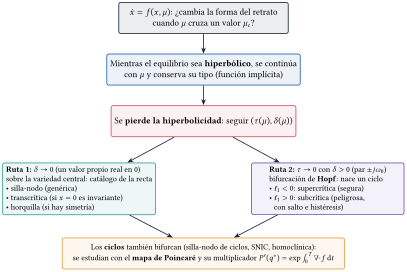
Las dos rutas
Si la jacobiana es invertible, el equilibrio se continúa suavemente con \(\mu\) y conserva su tipo (teorema de la función implícita). En el plano, con \(\tau=\mathrm{tr}\,J\) y \(\delta=\det J\), la hiperbolicidad se pierde por la Ruta 1 (\(\delta\to0\): silla-nodo, transcrítica, horquilla) o por la Ruta 2 (\(\tau\to0\) con \(\delta>0\): Hopf).
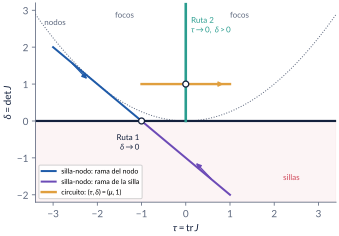
Cinco pasos
- Equilibrios en función de \(\mu\). 2. Jacobiano en cada rama, \(\tau(\mu)\) y \(\delta(\mu)\). 3. Cruce: \(\delta=0\), o \(\tau=0\) con \(\delta>0\). 4. Transversalidad: el valor propio cruza con velocidad no nula. 5. No degeneración: el primer término no lineal decide el tipo. Sin los pasos 4 y 5 no se sabe qué bifurcación hay.
Trampa: “\(\det J=0\) en \(\mu_c\): hay una bifurcación”
Es necesario, no suficiente: en \(\dot x=\mu-x^3\), \(f_x(0,0)=0\), pero para todo \(\mu\) hay un único equilibrio \(\mu^{1/3}\), siempre estable. No pasa nada.
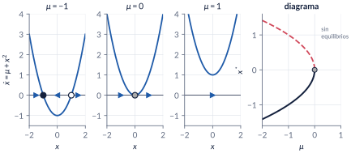
Trampa: “ya no hay equilibrio: el estado pasa de largo”
Del lado sin equilibrios queda un fantasma: el tiempo de tránsito crece como \(\pi/\sqrt{|\mu|}\) (\(29.42\) de \(x=1\) a \(x=-1\) con \(|\mu|=0.01\)). Del otro lado, la recuperación se vuelve lenta (constante de tiempo \(1/(2\sqrt\mu)\)): una señal de alerta temprana.
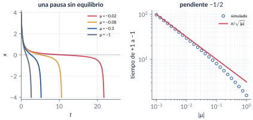
Transcrítica y horquilla: frágiles
Solo la silla-nodo y la Hopf son genéricas. La transcrítica necesita un equilibrio que exista para todo \(\mu\) (el umbral del láser, \(N_0=k/G\)); la horquilla, una simetría \(x\mapsto-x\). Con una imperfección \(\varepsilon\), ambas se deshacen.
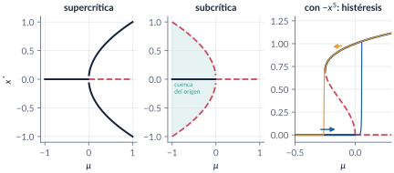
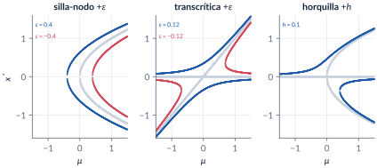
Trampa: “para reducir, se pone \(x_2=0\)”
En \(\dot x_1=\mu x_1-x_1x_2\), \(\dot x_2=-x_2+x_1^2\), con \(x_2=0\) queda \(\dot x_1=\mu x_1\), que no decide nada. Sobre la variedad central \(x_2\approx x_1^2\) queda \(\dot x_1\approx\mu x_1-x_1^3\): una horquilla supercrítica, con equilibrios exactos \((\pm\sqrt\mu,\mu)\).
El interruptor genético de Griffith
\(\dot x=-ax+y\), \(\dot y=x^2/(1+x^2)-by\): tres equilibrios si \(a<a_c=1/(2b)\) (\(1.4286\) con \(b=0.35\)); en \(a_c\) la silla y el nodo alto chocan en \(x=1\). Biestable para \(a<a_c\), con histéresis: si \(a\) sube por encima de \(a_c\) el gen se apaga, y al bajar \(a\) no se vuelve a encender.
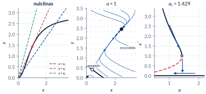
Poincaré–Andronov–Hopf
Si los valores propios \(\alpha(\mu)\pm j\omega(\mu)\) cruzan el eje imaginario en \(\mu_c\) con \(\omega_0>0\), \(\alpha'(\mu_c)\neq0\) y el primer coeficiente de Lyapunov \(\ell_1\neq0\), nace una familia de órbitas periódicas de amplitud \(\propto\sqrt{|\mu-\mu_c|}\) y período \(\to2\pi/\omega_0\). \(\ell_1<0\): supercrítica (ciclo estable); \(\ell_1>0\): subcrítica (ciclo inestable).
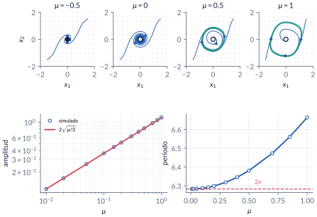
Trampa: “en \(\mu_c\) la linealización es un centro: hay órbitas cerradas”
En la forma normal con \(\mu=0\), \(\dot r=-r^3\): \(r(t)=r_0/\sqrt{1+2r_0^2t}\). El origen es asintóticamente estable, pero converge como \(1/\sqrt t\). Deciden los términos cúbicos.
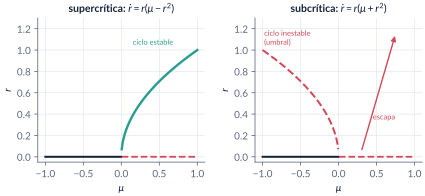
Trampa: “con una rampa lenta, el salto ocurre exactamente en \(\mu_c\)”
En \(\dot r=r(\mu+r^2-r^4)\) (Hopf subcrítica en \(0\), silla-nodo de ciclos en \(-1/4\)), una rampa lenta salta en \(\mu\approx0.048\), no en \(0\): el estado se acercó tanto al origen que tarda en salir. Al bajar, el ciclo se apaga cerca de \(-1/4\).
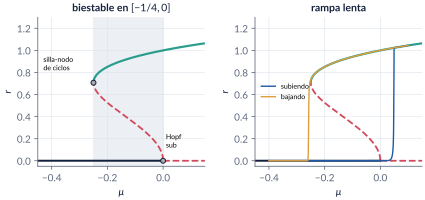
Trampa: “esta es la catástrofe de cielo azul”
El ejemplo con \(\dot r=r((1-r^2)^2\cos\mu-\sin\mu)\) es una silla-nodo de ciclos: dos ciclos de radio finito nacen juntos. La catástrofe de cielo azul (Turaev y Shilnikov, 1995) es otra cosa y no ocurre en el plano.
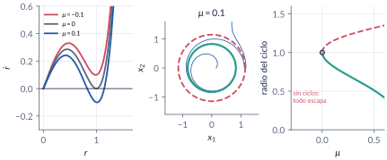
Mapa de Poincaré y multiplicador
Las órbitas periódicas son puntos fijos del mapa de primer retorno \(P\) a una sección transversal \(\Sigma\); el ciclo es estable si \(|P'(q^*)|<1\). En el plano, \(P'(q^*)=\exp\int_0^T\nabla\cdot f(\gamma(t))\,dt\), sin importar la sección (Perko, §3.4).
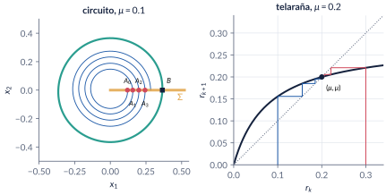
Trampa: “el tiempo entre retornos es constante”
Solo cuando \(\dot\theta\) no depende de \(r\). En van der Pol, \(\tau(q)\) cambia con \(q\) (6.81 desde \(q=0.5\), 6.55 desde \(q=2.5\)) y vale el período, \(6.663\), solo en el punto fijo \(q^*=1.1081\), donde \(P'(q^*)=8.60\times10^{-4}\).
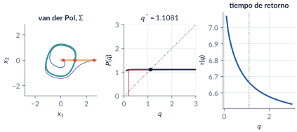
Explorador interactivo
Tres pestañas. Todo se calcula en su navegador (Runge–Kutta de paso fijo, Newton y jacobianas numéricas), con los mismos modelos de C6_Ej1–C6_Ej12.
Retos con el explorador
- Recta: en la silla-nodo, ponga \(\varepsilon=0.2\). ¿Dónde está ahora la bifurcación? Haga lo mismo con la transcrítica y con la horquilla. ¿Cuál cambia de forma?
- Recta: en la subcrítica con \(-x^5\), recorra \(\mu\) de \(-0.5\) a \(0.3\) y de vuelta. Señale en el diagrama el ciclo de histéresis.
- Plano: en la silla-nodo, baje \(\mu\) hasta \(0\). ¿Qué pasa con los puntos \((\tau,\delta)\)? Con \(\mu=-0.05\), lance una trayectoria desde \((2,0.5)\): ¿dónde se demora?
- Plano: en la horquilla escondida, ¿sobre qué curva quedan los equilibrios nuevos? ¿Por qué no sobre el eje \(x_1\)?
- Plano: en el interruptor genético, con \(a=1\), lance trayectorias desde \((0.5,0.5)\) y desde \((1,1)\). Suba \(a\) a \(1.5\) y repita.
- Plano: en el circuito, siga el punto \((\tau,\delta)\) al mover \(\mu\) de \(-1\) a \(1\). ¿Qué semirrecta cruza? En la Hopf subcrítica con \(\mu=-0.2\), lance trayectorias desde \(r=0.4\) y \(r=0.5\).
- Poincaré: en el ejemplo con fórmula, compare el multiplicador con \(e^{-2\pi\mu}\) para \(\mu=0.05\) y \(\mu=0.5\). ¿Cuándo es el ciclo “apenas” atractor?
- Poincaré: en el circuito con \(\mu=1\), ¿es constante el tiempo de retorno? Baje \(\mu\) a \(0.1\) y compare el multiplicador con \(e^{-2\pi\mu}\).
Códigos de esta parte
Los bloques salen directamente de los archivos del repositorio. Ejecute antes iniciarCurso. verificarCap06 comprueba los números del capítulo (42/42). Ningún script necesita toolboxes. Dos funciones nuevas en comun/: primerLyapunov (el coeficiente \(\ell_1\) de una Hopf, con derivadas numéricas) y mapaPoincare (primer retorno a una sección, con un evento de ode45).
La silla-nodo (§6.3).
mus = [-1 0 1];
fig = estiloFigura(1300, 420);
for k = 1:3
mu = mus(k);
if mu < 0, eqc = [-sqrt(-mu) sqrt(-mu)]; elseif mu == 0, eqc = 0; else, eqc = []; end
eq = lineaFase(subplot(1, 4, k), @(x) mu + x.^2, [-2 2], 'Equilibrios', eqc);
title(sprintf('$\\mu=%g$', mu)); xlabel('$x$'); ylabel('$\\dot x$'); ylim([-1.5 4]);
for i = 1:numel(eq.x), fprintf('mu = %+g: x* = %+.3f %s\n', mu, eq.x(i), eq.tipo{i}); end
end
m = linspace(-2, 0, 200); % diagrama: mu = -x^2
subplot(1, 4, 4); hold on;
plot(m, -sqrt(-m), '-', 'Color', [20 33 61]/255); % rama estable
plot(m, sqrt(-m), '--', 'Color', [209 73 91]/255); % rama inestable
plot(0, 0, 'o', 'MarkerFaceColor', [0.6 0.6 0.6], 'MarkerEdgeColor', 'k');
grid on; xlabel('$\mu$'); ylabel('$x^*$'); xlim([-2 1]); title('Diagrama de bifurcaci\''on');% x' = x(1-x) - h: condiciones del teorema de la silla-nodo en (1/2, 1/4)
fx = @(x, h) 1 - 2*x; fh = @(x, h) -1; fxx = @(x, h) -2;
fprintf('cosecha: f = %g, f_x = %g, f_h = %g, f_xx/2 = %g\n', 0.5*(1 - 0.5) - 0.25, ...
fx(0.5, 0.25), fh(0.5, 0.25), fxx(0.5, 0.25)/2);
% forma normal exacta: x' = (1/4 - h) - (x - 1/2)^2
x = linspace(0, 1, 7); h = 0.2;
fprintf('max |x(1-x) - h - [(1/4-h) - (x-1/2)^2]| = %.1e\n', max(abs(x.*(1 - x) - h - ((0.25 - h) - (x - 0.5).^2))));El fantasma (§6.3).
mm = logspace(-3, 0, 25); % |mu|
Tsim = zeros(size(mm));
for k = 1:numel(mm)
m = mm(k);
opc = odeset('RelTol', 1e-10, 'AbsTol', 1e-12, 'Events', @(t, x) deal(x + 1, 1, -1));
[~, ~, te] = ode45(@(t, x) -m - x^2, [0 1e5], 1, opc);
Tsim(k) = te(1);
end
Texacto = 2*atan(1./sqrt(mm))./sqrt(mm);
fprintf('|mu| = 0.01: simulado %.4f, exacto %.4f, pi/sqrt|mu| = %.4f\n', ...
interp1(mm, Tsim, 0.01), 2*atan(10)/0.1, pi/0.1);
fprintf('error relativo máximo simulado vs exacto: %.1e\n', max(abs(Tsim - Texacto)./Texacto));
p = polyfit(log(mm(1:8)), log(Tsim(1:8)), 1);
fprintf('pendiente log-log cerca de mu = 0: %.4f (teoría: -1/2)\n', p(1));Transcrítica y el láser (§6.4).
G = 1; k = 1; alfa = 0.5; eps0 = 0; % eps0 > 0: emisión espontánea
N0s = linspace(0, 3, 31); nss = zeros(size(N0s));
opc = odeset('RelTol', 1e-10, 'AbsTol', 1e-12);
for i = 1:numel(N0s)
N0 = N0s(i);
[~, n] = ode45(@(t, n) (G*N0 - k)*n - alfa*G*n^2 + eps0, [0 400], 0.01, opc);
nss(i) = n(end);
end
nteo = max(0, (G*N0s - k)/(alfa*G));
fprintf('umbral N0 = k/G = %g; N0 = 2: n simulado = %.4f, n* = %.4f\n', k/G, nss(N0s == 2), (2*G - k)/(alfa*G));
fprintf('max |n simulado - n*| = %.1e\n', max(abs(nss - nteo)));Horquillas e histéresis (§6.4).
r = linspace(0, 1.4, 400);
musn = -r.^2 + r.^4; % ramas de x' = mu x + x^3 - x^5: mu = x^4 - x^2
estable = (2*r.^2 - 4*r.^4) < 0; % f_x en la rama = mu + 3x^2 - 5x^4 = 2x^2 - 4x^4
fprintf('silla-nodo: mu = %.4f en x = %.4f\n', min(musn), r(musn == min(musn)));
fprintf('mu = -0.1: x estable = %.4f, inestable = %.4f\n', sqrt((1 + sqrt(0.6))/2), sqrt((1 - sqrt(0.6))/2));T = 4000; ruido = 1e-6; % rampa: 0.8 en T unidades de tiempo
f = @(t, x, m0, m1) (m0 + (m1 - m0)*t/T)*x + x^3 - x^5 + ruido;
opc = odeset('RelTol', 1e-9, 'AbsTol', 1e-12, 'MaxStep', 2);
[t1, X1] = ode45(@(t, x) f(t, x, -0.5, 0.3), [0 T], 0.01, opc);
[t2, X2] = ode45(@(t, x) f(t, x, 0.3, -0.5), [0 T], X1(end), opc);
m1 = -0.5 + 0.8*t1/T; m2 = 0.3 - 0.8*t2/T;
fprintf('subiendo: salta en mu = %.3f; bajando: cae en mu = %.3f\n', ...
m1(find(X1 > 0.5, 1)), m2(find(X2 < 0.5, 1)));Bifurcaciones imperfectas (§6.4).
mu = linspace(-1.5, 1.5, 601);
casos = {@(m, e) [-1 0 m + e], @(m, e) [-1 m e], @(m, e) [-1 0 m e]}; % coeficientes en x
pert = [0.4, -0.12, 0.1];
fig = estiloFigura(1300, 420);
for c = 1:3
subplot(1, 3, c); hold on;
for e = [0 pert(c)]
for m = mu
z = roots(casos{c}(m, e)); z = real(z(abs(imag(z)) < 1e-9));
plot(m*ones(size(z)), z, '.', 'Color', [0.55 0.55 0.55]*(e == 0) + [30 90 168]/255*(e ~= 0), 'MarkerSize', 4);
end
end
grid on; xlabel('$\mu$'); ylabel('$x^*$');
end
fprintf('transcrítica, eps = -0.12: sillas-nodo en mu = +-%.4f\n', 2*sqrt(0.12));
fprintf('horquilla, h = 0.1: silla-nodo aislada en mu = %.4f\n', 3*(0.1/2)^(2/3));Silla-nodo en el plano y la horquilla escondida (§6.5).
fig = estiloFigura(1300, 420);
mus = [-1 0 1];
for k = 1:3
mu = mus(k); f = @(x) [mu - x(1)^2; -x(2)];
if mu > 0, eqs = [sqrt(mu) -sqrt(mu); 0 0]; elseif mu == 0, eqs = [0; 0]; else, eqs = zeros(2, 0); end
retratoFase(subplot(1, 4, k), f, [-2 2], [-2 2], 'T', 4, 'Equilibrios', eqs);
title(sprintf('$\\mu=%g$', mu)); xlabel('$x_1$'); ylabel('$x_2$');
end
m = linspace(0, 2, 100);
subplot(1, 4, 4); hold on;
plot(-2*sqrt(m) - 1, 2*sqrt(m), 'Color', [30 90 168]/255); % rama del nodo
plot(2*sqrt(m) - 1, -2*sqrt(m), 'Color', [209 73 91]/255); % rama de la silla
tt = linspace(-4, 4, 100); plot(tt, tt.^2/4, 'k:', [-4 4], [0 0], 'k-');
grid on; xlabel('$\tau$'); ylabel('$\delta$'); title('Ruta 1: cruce de $\delta=0$');
for mu = [1 0.25]
Jn = [-2*sqrt(mu) 0; 0 -1]; Js = [2*sqrt(mu) 0; 0 -1];
fprintf('mu = %.2f: nodo (tau, delta) = (%.3f, %.3f); silla (%.3f, %.3f)\n', mu, trace(Jn), det(Jn), trace(Js), det(Js));
endmu = 0.1;
f = @(t, x) [mu*x(1) - x(1)*x(2); -x(2) + x(1)^2];
opc = odeset('RelTol', 1e-10, 'AbsTol', 1e-12);
[t, X] = ode45(f, [0 200], [0.05; 0], opc);
J = jacobianoNumerico(@(x) f(0, x), [sqrt(mu); mu]);
fprintf('escondida: x(200) = (%.4f, %.4f), sqrt(mu) = %.4f; tau = %.3f, delta = %.3f\n', ...
X(end, :), sqrt(mu), trace(J), det(J));
% variedad central con mu = 0: h = x1^2 + 2 x1^4 -> x1' = -x1^3 - 2 x1^5
k = t > 20;
fprintf('max |x2 - x1^2| para t > 20: %.2e (la variedad, no el eje)\n', max(abs(X(k, 2) - X(k, 1).^2)));El interruptor genético (§6.5).
b = 0.35; a = 1; ac = 1/(2*b);
fprintf('b = %.2f: a_c = 1/(2b) = %.4f\n', b, ac);
d = 1 - 4*a^2*b^2;
xs = [0, (1 - sqrt(d))/(2*a*b), (1 + sqrt(d))/(2*a*b)];
for x = xs
J = [-a 1; 2*x/(1 + x^2)^2 -b];
fprintf('a = %g: x* = %.4f, y* = %.4f, tau = %.3f, delta = %+.4f: %s\n', ...
a, x, a*x, trace(J), det(J), clasificarEquilibrio(J));
endF = @(a) @(t, z) [-a*z(1) + z(2); z(1)^2/(1 + z(1)^2) - b*z(2)];
opc = odeset('RelTol', 1e-10, 'AbsTol', 1e-12);
z = [2; 2.6];
for a = [1.3 1.6 1.3]
[~, Z] = ode45(F(a), [0 400], z, opc); z = Z(end, :).';
fprintf('a = %.1f: x final = %.4f\n', a, z(1));
endHopf en el circuito (§6.6).
for mu = [-0.5 0 0.5]
lam = eig([mu 1; -1 0]);
fprintf('mu = %+.1f: lambda = %+.3f +- %.3fj\n', mu, real(lam(1)), abs(imag(lam(1))));
end
mus = [0.01 0.02 0.05 0.1 0.15 0.2 0.3 0.4 0.5 0.7 0.85 1];
amp = zeros(size(mus)); per = amp;
opc = odeset('RelTol', 1e-10, 'AbsTol', 1e-12);
for k = 1:numel(mus)
mu = mus(k); f = @(t, x) [x(2) - (x(1)^3 - mu*x(1)); -x(1)];
[~, X] = ode45(f, [0 600], [0.1; 0], opc); % transitorio
xr = mapaPoincare(@(x) f(0, x), X(end, :), @(x) x(2), -1); % llegar a Sigma
[xr, T] = mapaPoincare(@(x) f(0, x), xr, @(x) x(2), -1); % una vuelta: período
[~, X] = ode45(f, linspace(0, T, 2000), xr, opc); % una vuelta
amp(k) = max(X(:, 1)); per(k) = T;
end
fprintf('mu = 0.1: amplitud %.4f (predicción %.4f), período %.4f\n', amp(mus == 0.1), 2*sqrt(0.1/3), per(mus == 0.1));
fprintf('mu = 1: amplitud %.4f, período %.4f\n', amp(end), per(end));¿Supercrítica o subcrítica? (§6.6).
sup = @(x) [-x(2) - x(1)*(x(1)^2 + x(2)^2); x(1) - x(2)*(x(1)^2 + x(2)^2)];
sub = @(x) [-x(2) + x(1)*(x(1)^2 + x(2)^2); x(1) + x(2)*(x(1)^2 + x(2)^2)];
cir = @(x) [x(2) - x(1)^3; -x(1)];
K = 3; rm = @(x) [x(1)*(1 - x(1)/K) - x(1)*x(2)/(1 + x(1)); x(2)*(2*x(1)/(1 + x(1)) - 1)];
fprintf('l1: super %.4f, sub %.4f, circuito %.4f, Rosenzweig-MacArthur %.4f\n', ...
primerLyapunov(sup, [0; 0]), primerLyapunov(sub, [0; 0]), ...
primerLyapunov(cir, [0; 0]), primerLyapunov(rm, [1; 4/3]));mu = 0.05;
fs = @(t, x) [mu*x(1) - x(2) - x(1)*(x(1)^2 + x(2)^2); x(1) + mu*x(2) - x(2)*(x(1)^2 + x(2)^2)];
fb = @(t, x) [mu*x(1) - x(2) + x(1)*(x(1)^2 + x(2)^2); x(1) + mu*x(2) + x(2)*(x(1)^2 + x(2)^2)];
opc = odeset('RelTol', 1e-9, 'AbsTol', 1e-12, 'Events', @(t, x) deal(norm(x) - 10, 1, 1));
[~, X] = ode45(fs, [0 400], [0.01; 0], opc);
fprintf('super, mu = %.2f: r final = %.4f (sqrt(mu) = %.4f)\n', mu, norm(X(end, :)), sqrt(mu));
[t, X] = ode45(fb, [0 400], [0.01; 0], opc);
fprintf('sub, mu = %.2f: r = %.1f en t = %.1f (escapa)\n', mu, norm(X(end, :)), t(end));Histéresis de ciclos con rampa lenta (§6.6).
r = linspace(0, 1.3, 600); m = r.^4 - r.^2; est = (2*r - 4*r.^3) < 0;
fprintf('silla-nodo de ciclos: mu = %.4f, r = %.4f\n', min(m), r(m == min(m)));
T = 3000; ruido = 1e-6;
g = @(t, r, m0, m1) r*((m0 + (m1 - m0)*t/T) + r^2 - r^4) + ruido;
opc = odeset('RelTol', 1e-10, 'AbsTol', 1e-12, 'MaxStep', 1);
[t1, R1] = ode45(@(t, r) g(t, r, -0.4, 0.1), [0 T], 1e-3, opc);
[t2, R2] = ode45(@(t, r) g(t, r, 0.1, -0.4), [0 T], R1(end), opc);
m1 = -0.4 + 0.5*t1/T; m2 = 0.1 - 0.5*t2/T;
fprintf('subiendo: salta en mu = %.4f; bajando: se apaga en mu = %.4f\n', ...
m1(find(R1 > 0.5, 1)), m2(find(R2 < 0.3, 1)));El mapa con fórmula (§6.8).
mu = 0.2;
f = @(x) [mu*x(1) + x(2) - x(1)*norm(x); -x(1) + mu*x(2) - x(2)*norm(x)];
P = @(r0) mu*r0./(r0 + (mu - r0)*exp(-2*pi*mu));
for r0 = [0.05 0.1 0.3]
[xr, tau] = mapaPoincare(f, [r0; 0], @(x) x(2), -1);
fprintf('r0 = %.2f: P simulado = %.8f, fórmula = %.8f, tiempo de retorno = %.6f\n', r0, xr(1), P(r0), tau);
end
dP = (P(mu + 1e-6) - P(mu - 1e-6))/2e-6;
fprintf("P'(mu) = %.6f, e^{-2 pi mu} = %.6f\n", dP, exp(-2*pi*mu));
seq = zeros(2, 8); seq(:, 1) = [0.1; 0.3];
for k = 2:8, seq(:, k) = P(seq(:, k - 1)); end
disp('sucesiones de Poincaré:'); disp(seq);Van der Pol: el mapa numérico y el multiplicador por dos caminos (§6.8).
f = @(x) [x(2) - (x(1)^3 - x(1)); -x(1)];
sigma = @(x) x(2); % en x1 > 0, x2' = -x1 < 0: cruza bajando
Pq = @(q) [1 0]*mapaPoincare(f, [q; 0], sigma, -1);
qs = fzero(@(q) Pq(q) - q, [0.5 2]);
[~, T] = mapaPoincare(f, [qs; 0], sigma, -1);
dP = (Pq(qs + 1e-5) - Pq(qs - 1e-5))/2e-5;
opc = odeset('RelTol', 1e-11, 'AbsTol', 1e-12);
[~, Z] = ode45(@(t, z) [f(z(1:2)); 1 - 3*z(1)^2], [0 T], [qs; 0; 0], opc);
fprintf('q* = %.4f, período = %.4f\n', qs, T);
fprintf("P'(q*) por diferencias = %.4e; exp(int div f) = %.4e\n", dP, exp(Z(end, 3)));
qq = linspace(0.2, 3, 15); PP = zeros(size(qq)); tt = PP;
for k = 1:numel(qq), [xr, tt(k)] = mapaPoincare(f, [qq(k); 0], sigma, -1); PP(k) = xr(1); end
fprintf('tau(0.5) = %.4f, tau(2.5) = %.4f\n', interp1(qq, tt, 0.5, 'spline'), interp1(qq, tt, 2.5, 'spline'));primerLyapunov (en comun/).
function [l1, w0, P] = primerLyapunov(f, xs, h)
% PRIMERLYAPUNOV Primer coeficiente de Lyapunov de una bifurcación de Hopf (cap. 6).
% [l1, w0] = primerLyapunov(f, xs) f = @(x) campo en R^2 (vector columna),
% xs = equilibrio cuya jacobiana tiene valores propios +-j w0 (en el valor crítico).
% Lleva el sistema a u' = -w0 v + F(u,v), v' = w0 u + G(u,v) con el cambio
% x = xs + P [u; v], P = [e1, A e1/w0] (A = jacobiana), y aplica la fórmula de
% Guckenheimer y Holmes (ec. 3.4.11) con derivadas por diferencias centradas
% (exactas, salvo redondeo, si F y G son polinomios de grado <= 3).
% l1 < 0: Hopf supercrítica (ciclo estable); l1 > 0: subcrítica.
% La magnitud de l1 depende de la escala de las coordenadas; el signo no.
% Compatible con MATLAB y GNU Octave.
if nargin < 3, h = 1e-2; end
A = jacobianoNumerico(f, xs(:), 1e-6);
w0 = sqrt(det(A));
if abs(trace(A)) > 1e-6*w0 || ~isreal(w0)
warning('primerLyapunov: la jacobiana no tiene valores propios +-j w0 (tr = %g, det = %g)', trace(A), det(A));
end
P = [[1; 0], A*[1; 0]/w0];
B = P\A*P; % [0 -w0; w0 0]
g = @(u, v) P\f(xs(:) + P*[u; v]) - B*[u; v]; % parte no lineal [F; G]
F = @(u, v) [1 0]*g(u, v); G = @(u, v) [0 1]*g(u, v);
d_uu = @(K) (K(h, 0) - 2*K(0, 0) + K(-h, 0))/h^2;
d_vv = @(K) (K(0, h) - 2*K(0, 0) + K(0, -h))/h^2;
d_uv = @(K) (K(h, h) - K(h, -h) - K(-h, h) + K(-h, -h))/(4*h^2);
d_uuu = @(K) (K(2*h, 0) - 2*K(h, 0) + 2*K(-h, 0) - K(-2*h, 0))/(2*h^3);
d_vvv = @(K) (K(0, 2*h) - 2*K(0, h) + 2*K(0, -h) - K(0, -2*h))/(2*h^3);
d_uvv = @(K) ((K(h, h) - K(-h, h)) - 2*(K(h, 0) - K(-h, 0)) + (K(h, -h) - K(-h, -h)))/(2*h^3);
d_uuv = @(K) ((K(h, h) - K(h, -h)) - 2*(K(0, h) - K(0, -h)) + (K(-h, h) - K(-h, -h)))/(2*h^3);
l1 = (d_uuu(F) + d_uvv(F) + d_uuv(G) + d_vvv(G))/16 + ...
(d_uv(F)*(d_uu(F) + d_vv(F)) - d_uv(G)*(d_uu(G) + d_vv(G)) - d_uu(F)*d_uu(G) + d_vv(F)*d_vv(G))/(16*w0);
endmapaPoincare (en comun/).
function [xr, tau] = mapaPoincare(f, x0, sigma, sentido, Tmax)
% MAPAPOINCARE Primer retorno a una sección transversal (capítulo 6).
% [xr, tau] = mapaPoincare(f, x0, sigma, sentido)
% f campo: f = @(x) [...] (vector columna, invariante en el tiempo).
% x0 punto de partida, sobre la sección.
% sigma función escalar: la sección es {x : sigma(x) = 0}.
% sentido +1 si el flujo cruza la sección con sigma creciente, -1 si decreciente.
% Tmax tiempo máximo de integración (100 por defecto).
% Devuelve el punto de retorno xr = P(x0) y el tiempo de retorno tau(x0).
% El tiempo de retorno depende de x0: por eso se usa un evento, no un tiempo fijo.
% Para no detectar el punto de partida, primero se integra un tramo corto sin eventos.
% Compatible con MATLAB y GNU Octave.
if nargin < 5, Tmax = 100; end
t0 = 1e-3;
opc = odeset('RelTol', 1e-11, 'AbsTol', 1e-12);
[~, X] = ode45(@(t, x) f(x), [0 t0/2 t0], x0(:), opc);
opc = odeset(opc, 'Events', @(t, x) deal(sigma(x), 1, sentido));
[~, ~, te, xe] = ode45(@(t, x) f(x), [t0 Tmax], X(end, :).', opc);
if isempty(te), error('mapaPoincare: no hubo retorno antes de Tmax = %g', Tmax); end
xr = xe(1, :).'; tau = te(1);
endEl modelo se construye por código: ejecute el script y se crea, se simula y se compara con ode45.
InterruptorGenetico.slx: el interruptor genético con una rampa lenta de \(a\) que sube y baja.
%% crearModelo_InterruptorGenetico -- Construye "InterruptorGenetico.slx" (sección 6.5)
% Interruptor genético de Griffith con la tasa de degradación a variando lentamente:
% x' = -a(t) x + y, y' = x^2/(1 + x^2) - b y,
% a(t) sube de a0 a a1 en Tr unidades de tiempo y vuelve a bajar (señal triangular).
% Solo bloques básicos (sin toolboxes).
% USO 1) ejecute el script: crea el modelo, lo simula y grafica x contra a;
% 2) cambie b, a0, a1 o Tr en el workspace y vuelva a simular.
% OBSERVE: el gen se apaga un poco después de a_c = 1/(2b) (retardo, más corto cuanto
% más lenta la rampa) y no se vuelve a encender al bajar a: histéresis.
clear; clc;
b = 0.35; a0 = 1; a1 = 1.8; Tr = 6400; x0 = [2.4; 2.4];
vars = {'b', 'a0', 'a1', 'Tr', 'x0'};
for i = 1:numel(vars), assignin('base', vars{i}, eval(vars{i})); end
mdl = 'InterruptorGenetico';
if bdIsLoaded(mdl), close_system(mdl, 0); end
new_system(mdl); open_system(mdl);
blk = @(tipo, nombre, varargin) add_block(tipo, [mdl '/' nombre], varargin{:});
lin = @(desde, hasta) add_line(mdl, desde, hasta, 'autorouting', 'on');
blk('simulink/Sources/Clock', 'reloj', 'Position', [20 230 40 250]);
blk('simulink/User-Defined Functions/Fcn', 'a(t)', 'Expr', 'a0 + (a1 - a0)*(1 - abs(1 - u/Tr))', 'Position', [80 225 200 255]);
blk('simulink/Continuous/Integrator', 'x', 'InitialCondition', 'x0(1)', 'Position', [380 40 410 70]);
blk('simulink/Continuous/Integrator', 'y', 'InitialCondition', 'x0(2)', 'Position', [380 150 410 180]);
blk('simulink/User-Defined Functions/Fcn', 'dx', 'Expr', '-u(1)*u(2) + u(3)', 'Position', [240 40 320 70]);
blk('simulink/User-Defined Functions/Fcn', 'dy', 'Expr', 'u(1)^2/(1 + u(1)^2) - b*u(2)', 'Position', [240 150 320 180]);
blk('simulink/Signal Routing/Mux', 'mux1', 'Inputs', '3', 'Position', [200 30 205 80]);
blk('simulink/Signal Routing/Mux', 'mux2', 'Inputs', '2', 'Position', [200 145 205 185]);
blk('simulink/Signal Routing/Mux', 'salida', 'Inputs', '3', 'Position', [480 40 485 250]);
blk('simulink/Sinks/To Workspace', 'registro', 'VariableName', 'reg', 'SaveFormat', 'Array', 'Position', [540 130 610 160]);
blk('simulink/Sinks/XY Graph', 'x contra a', 'Position', [540 220 570 250]);
lin('reloj/1', 'a(t)/1');
lin('a(t)/1', 'mux1/1'); lin('x/1', 'mux1/2'); lin('y/1', 'mux1/3'); lin('mux1/1', 'dx/1'); lin('dx/1', 'x/1');
lin('x/1', 'mux2/1'); lin('y/1', 'mux2/2'); lin('mux2/1', 'dy/1'); lin('dy/1', 'y/1');
lin('a(t)/1', 'salida/1'); lin('x/1', 'salida/2'); lin('y/1', 'salida/3'); lin('salida/1', 'registro/1');
lin('a(t)/1', 'x contra a/1'); lin('x/1', 'x contra a/2');
try, Simulink.BlockDiagram.arrangeSystem(mdl); catch, end
set_param(mdl, 'StopTime', '2*Tr', 'Solver', 'ode45', 'RelTol', '1e-9', 'MaxStep', '1');
save_system(mdl);
fprintf('Modelo %s.slx creado.\n', mdl);
salida = sim(mdl); reg = salida.get('reg');
k = find(reg(:, 2) < 0.7, 1);
fprintf('a_c = %.4f; el gen se apaga en a = %.4f (subiendo); x final = %.4f (apagado)\n', 1/(2*b), reg(k, 1), reg(end, 2));
F = @(t, z) [-(a0 + (a1 - a0)*(1 - abs(1 - t/Tr)))*z(1) + z(2); z(1)^2/(1 + z(1)^2) - b*z(2)];
[~, Z] = ode45(F, [0 2*Tr], x0, odeset('RelTol', 1e-9, 'MaxStep', 1));
fprintf('ode45: x final = %.4f\n', Z(end, 1));
figure; plot(reg(:, 1), reg(:, 2)); grid on; xlabel('a'); ylabel('x'); title('Histéresis del interruptor genético');Videos
Los videos están publicados (generados con herramientas/cap06_videos.py, los mismos modelos y parámetros); los scripts C6_Video_* de MATLAB producen la misma animación para grabarla en su computador.
| Video | Qué muestra | Script |
|---|---|---|
| V6.1 · Cuello de botella | El fantasma de la silla-nodo: la pausa crece al acercarse \(\mu\) a \(0\). | C6_Video_CuelloBotella.m |
| V6.2 · Nace un ciclo | Los valores propios cruzan el eje imaginario y aparece el ciclo del circuito. | C6_Video_Hopf.m |
| V6.3 · Histéresis de ciclos | Rampa lenta de \(\mu\): el salto llega tarde y el regreso ocurre en \(-1/4\). | C6_Video_Histeresis.m |
| V6.4 · Sucesión de Poincaré | Los cruces de van der Pol con \(\Sigma\) y la telaraña del mapa. | C6_Video_Poincare.m |
Problemas
Los problemas del capítulo (§6.10) tienen cada uno una trampa; las soluciones seleccionadas están en §6.11 y las respuestas a las pausas al final del capítulo.